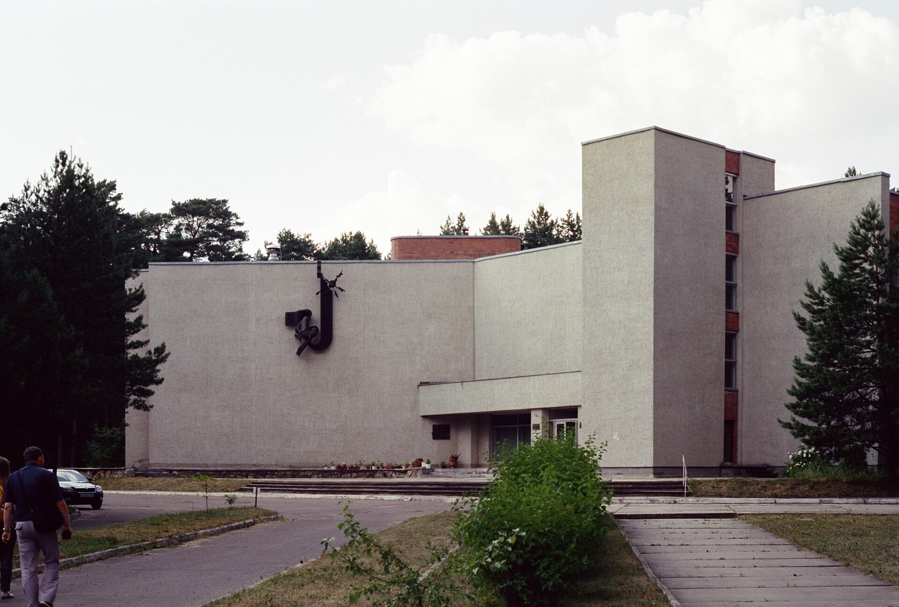

Наукоград — это город, построенный вокруг науки: вокруг реактора, ускорителя, конструкторского бюро или полигона. В СССР таких городов были десятки, многих не было на картах. В 1999 году Россия придумала для них особый статус и федеральные деньги. Мы собрали всё, что о них известно в цифрах, — от указов и законов о бюджете до переписей и возрастной структуры учёных — и прошли по ним от 1990 года до октября 2026-го.
Слово «наукоград» придумали в 1991 году в Жуковском — Спартак Никаноров и Наталия Никитина, авторы исследования о будущем авиационного города. Союз развития наукоградов учредили 19 августа 1991 года в здании Моссовета — в тот самый день, когда по Москве шли танки ГКЧП. Закон «О статусе наукограда» появился только в 1999-м: Борис Ельцин накладывал на него вето, Дума вето преодолела.
Статус даёт право на федеральные деньги. Первым его получил Обнинск в мае 2000 года. С тех пор статус присваивали 16 городам: семи — указами президента на срок до 25 лет, девяти — актами правительства. Трое его потеряли. Сегодня официальных наукоградов тринадцать.
Но «городов науки» в стране гораздо больше. Союз развития наукоградов насчитывает около 75 — от закрытых атомных городов вроде Сарова и Снежинска до сибирских академгородков. На карте — все они. Наведите курсор на точку.
Статус наукограда — не навсегда. Первые семь городов получили его указами президента на срок до 25 лет. После реформы 2004 года его стало присваивать правительство — на пять лет, а с 2017-го — на 15. Каждое продление — отдельное решение, и его можно не получить.
Так случилось с Петергофом: статус, присвоенный в 2005 году, не продлили, и город просто исчез из бюджетных таблиц. Протвино и Пущино в 2023 году объединили с Серпуховом — вопреки протестам жителей, — а в июне 2024-го их собственный статус отменили. С 2025 года закон прямо разрешает «поглощать» наукограды: при объединении статус переходит к новому округу по правопреемству.
Ближайшее окно риска — 31 декабря 2027 года, когда истекают сроки Мичуринска, Реутова и Фрязино. Решений о продлении пока нет. У Бийска, по оценке РАН за 2025 год, показатели «близки к пороговым».
Что требовалось от города, чтобы считаться наукоградом, — по редакциям закона № 70-ФЗ и постановлению № 1072.
В 1990 году исследованиями и разработками в России занимались 1,94 млн человек, из них 992,6 тысячи — исследователи. К 1998 году, за восемь лет, исследователей стало меньше на 58%. Потом падение замедлилось, но не остановилось: в 2025 году их 340,8 тысячи — на 66% меньше, чем в 1990-м. ИСИЭЗ ВШЭ называет эту цифру максимумом за последние пять лет; на фоне 1990 года это треть.
Наукограды пережили девяностые тяжелее других. «В первой половине девяностых уехала почти половина сотрудников», — говорил в 2015 году директор одного из пущинских институтов Генрих Иваницкий. Библиометрическое исследование насчитало около 400 учёных, уехавших из девяти институтов Пущино за рубеж в 1987–2017 годах; из одного только Института биохимии и физиологии микроорганизмов — 94, вернулись пятеро.
Уходили прежде всего молодые — те, у кого ещё была возможность начать заново. В 1994 году исследователи 40–49 лет были самой многочисленной группой: 31,7%. Это поколение должно было в 2010-е возглавить лаборатории. Но к 2014 году доля 40–49-летних упала до 13% — ниже доли тех, кому за шестьдесят. «Яма» — те, кому в начале девяностых было 25–35 лет и кто ушёл из науки или из страны, — двадцать лет движется по графику и только сейчас начинает затягиваться.
Сколько именно учёных работает в наукоградах, точно не знает никто. В 2019 году Счётная палата обнаружила, что по данным Росстата их почти 47 тысяч, а по данным Минобрнауки — 28 тысяч. В 2024 году на дискуссии в Шанинке звучала другая оценка: в научно-производственных комплексах наукоградов занято «4–5% населения», средний возраст сотрудников в Троицке — 53 года.
Федеральная поддержка наукоградов росла до 2008 года, когда достигла 1,5 млрд рублей на 12 городов. В кризисном 2010-м её урезали в 2,5 раза — до 577 млн, хотя двумя годами ранее на 2010 год обещали 1,7–1,8 млрд. С тех пор сумма не росла. В 2024 году из запланированных 309 млн рублей было исполнено 262 млн — минимум с 2002 года. На 2025–2028 годы заложено по 309 млн в год — в номинальных рублях, без поправки на инфляцию: в реальном выражении поддержка продолжает сокращаться.
Королёв, крупнейший наукоград страны, получал 254,6 млн рублей в 2008 году и 38,9 млн — в 2024-м. Троицк после присоединения к Москве получил последние 7,4 млн в 2017 году — и больше ничего. 309 млн рублей на десять городов в 2024 году — это около 300 рублей на жителя наукограда в год. Меньше рубля в день.
Парадокс наукоградов: как города они не вымирают. Ближние к столице Королёв, Реутов, Долгопрудный и Троицк (с 2012 года — в составе Москвы) выросли с 1989 года в 1,4–2,4 раза, но как спальные районы: новостройки, маятниковая миграция, присоединённые соседи. Дальние наукограды теряют людей: Мичуринск — пятую часть жителей, Бийск — почти четверть. А академические городки Пущино и Черноголовка замерли на отметке 1989 года.
Рост населения — не благо для статуса: чем больше в городе жителей, не связанных с наукой, тем труднее выполнить порог в 20% работников научно-производственного комплекса. В объединённом округе Серпухов в научно-производственном комплексе занято около 10 тысяч человек — при населении одного только города Серпухова больше 130 тысяч.
Главный памятник эпохи лежит под Протвино на глубине от 20 до 60 метров. Это 21-километровое кольцо тоннеля Ускорительно-накопительного комплекса — советского коллайдера на 3 ТэВ, который начали строить в 1983 году. На самом деле кольцо замкнули: проходку завершили в декабре 1994-го, построили подземные залы и канал инжекции, изготовили 1550 из 2226 дипольных магнитов. Но денег на монтаж уже не было, и в 1998 году проект закрыли.
Тоннель до сих пор сухой — воду откачивают, по разным оценкам, за 30–80 млн рублей в год. В декабре 2025 года Курчатовский институт заказал обследование тоннеля за 176 млн рублей; что с ним делать, обсуждают тридцать лет — от нейтринного пучка до грибной фермы. По длине кольцо УНК уступает только Большому адронному коллайдеру.

Восемь историй из наукоградов — и два контрпримера, где старые установки получили вторую жизнь.
Союзу развития наукоградов в августе 2026 года исполнилось 35 лет. Его новый президент — Михаил Ковальчук, глава Курчатовского института, в который вошёл протвинский ИФВЭ. В 2026 году впервые с 2008-го статус получил новый город, а не правопреемник, — Долгопрудный, а Саров объявил, что хочет статус. Одновременно правительство утвердило правила объединения наукоградов с соседями — по модели Серпухова.
Две мегаустановки доведены до пуска: в Дубне коллайдер NICA, бустер которого собран буквально внутри ярма магнита синхрофазотрона 1957 года, в 2026 году получил встречные пучки; в Кольцово 11 августа 2026 года открыли синхротрон СКИФ — с опозданием на два года и ценой, выросшей с 37 до 77 млрд рублей. Что это — вторая жизнь или управляемое угасание, покажут 2027–2031 годы, когда истекут сроки Мичуринска, Реутова, Фрязино и Бийска.
В 2009 году федеральных денег хватало на 14 наукоградов. В 2024-м — на 10, при сумме почти в пять раз меньше. Статусов стало меньше, критерии — строже, а слово «наукоград» впервые за 35 лет можно унаследовать. Главный вывод этого исследования
Материал собран 11 октября 2026 года. Каждая цифра взята из конкретного документа или таблицы; ниже — источники и оговорки. Цифры, которые проверить не удалось, в текст не вошли.